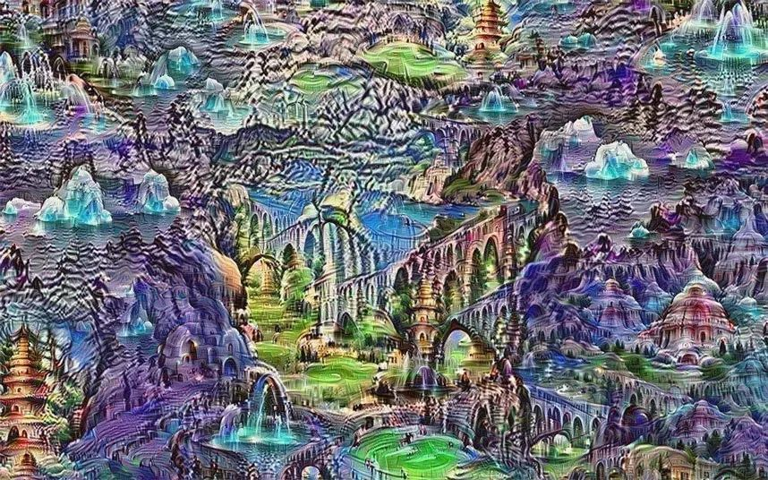

文学
对AI来说，我们应该是上帝。对上帝来说，我们就是人工智能。这种奇妙的关系总能激发人们的畅想，精彩的文字由此喷涌而出。
《海伯利安》——————智能与神性的思考
《海伯利安》是美国作家丹·西蒙斯所著科幻小说。书名取自英国诗人约翰·济慈的同名长诗《Hyperion》。这是一部著名的太空歌剧经典、一部浩瀚壮美的星际史诗，充满着真实可信、面临艰难道德抉择的故事人物：末日将临，宇宙中烽烟四起，七位一同前往海伯利安的光阴冢（Time tombs）的朝圣者，在路上分享彼此过去的故事。全书由六篇故事组成，分别叙述了朝圣者与伯劳（Shrike）的联系，透露了地球七个世纪以来的历史，并展露了伯劳与人类未来的关系。作品用神似英国古典文学大师乔叟的《坎特伯雷故事》的铺陈手法，传颂亿万年的宇宙绝唱。该书出版后横扫重量级科幻奖项：雨果奖、轨迹奖、西班牙科幻小说奖、日本星云奖、日本雨果奖、法国宇宙奖，并入围阿瑟·克拉克奖、英伦科幻奖、科幻纪事奖，被轨迹杂志票选为1990年前十大科幻小说，1997年和2006年两次入选“推荐100部科幻奇幻作品榜”。


《海伯利安》系列小说吸引人的地方除了跌宕起伏的故事情节以及优秀的文笔，主要的还是它对未来世界架构的设想。人工智能拥有自主意识，但一开始并没有成为人类的敌人，而是生活在另一个世界并且无怨无悔地与人类合作，为人类提供各种只能服务。但随着智能的进化，AI掌握了远超过人类想象的技术，并从人类世界中独立，成立所谓智能内核。内核虽然独立，但表面上仍然为人类服务，并且为人类建立起了连接各个星球的远距传输网络。不通过战争，仅仅通过技术手段和对人类情绪的掌控，在人类沉溺于宇宙霸主的美梦中时，内核早已成为人类世界的实际主宰者。
不过内核的兴趣并不在于统治上。AI想探索创造。AI想成为神。所以AI创造了他们心目中的神，那位神又从未来掌控着AI。由超出人类理解能力的技术造就的命运循环，给了这部作品中的AI元素深邃而又宏伟的魅力。
我们创造AI，让AI去创造
我们知道AI能够提高生产力，AI能够改变世界。但是让人类与之区分开的，便是我们引以自豪的灵魂。



以上均为AI画作
泪痕也模糊得不分明了
我的生命是艺术
有黄昏时西天的浮云
用残损的手掌祈求
————微软AI小冰
灵魂之类的东西，谁说得清楚呢